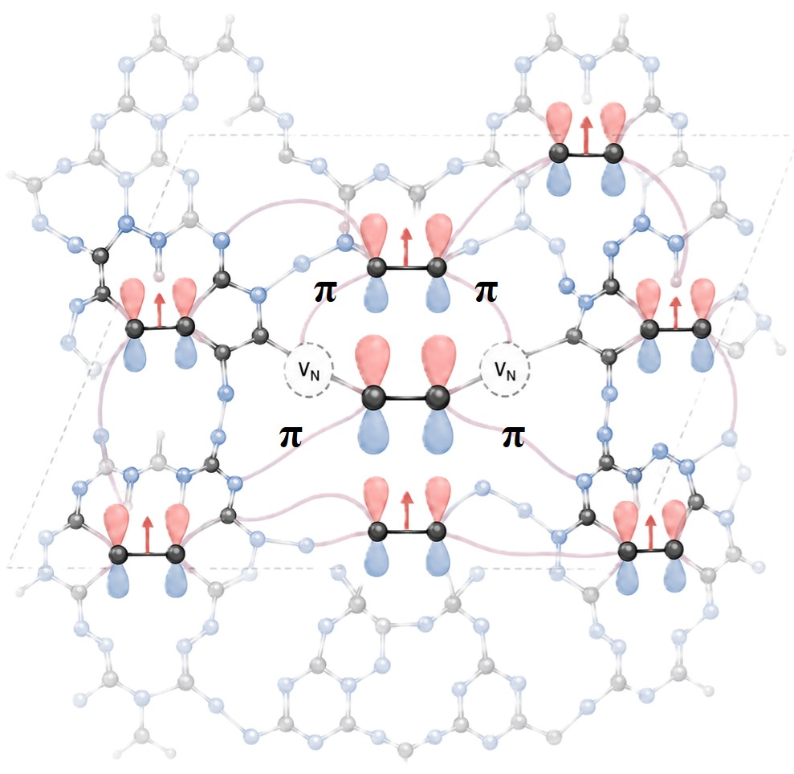
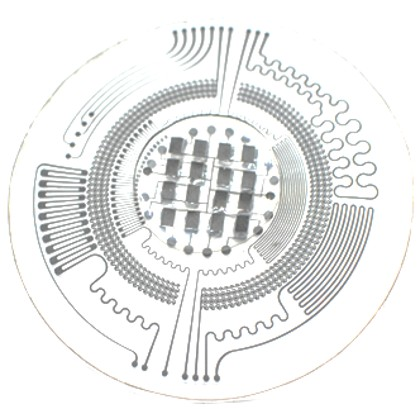
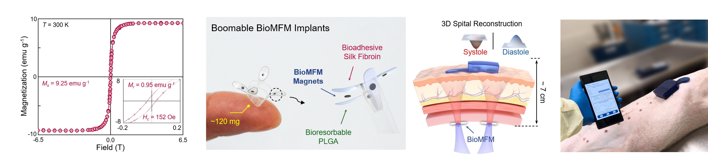
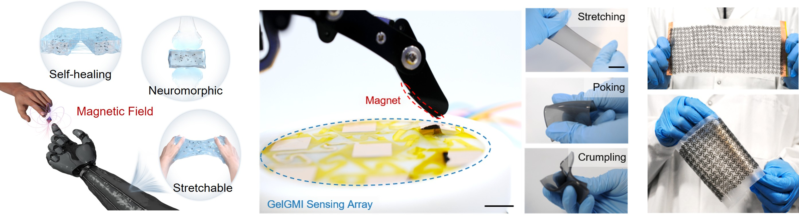

01
Ferroic & Intelligent Materials
Discovering emerging ferroic materials and tunable electrical, magnetic, and coupled physical properties.
Explore Ferroic & Intelligent MaterialsMaterials · Bioelectronics · Healthcare
From emerging materials and physical phenomena to flexible electronics and intelligent healthcare.


Our research
From fundamental physical phenomena to soft electronic interfaces and intelligent biomedical systems.
Discovering emerging ferroic materials and tunable electrical, magnetic, and coupled physical properties.
Explore Ferroic & Intelligent MaterialsEngineering flexible, wearable, and implantable devices from advanced functional materials.
Explore Flexible & Biointegrated ElectronicsConnecting advanced sensing devices with artificial intelligence for biomedical applications.
Explore Advanced Biomedical SolutionsRecent work

Nature Materials · 2026

Proceedings of the National Academy of Sciences · 2026